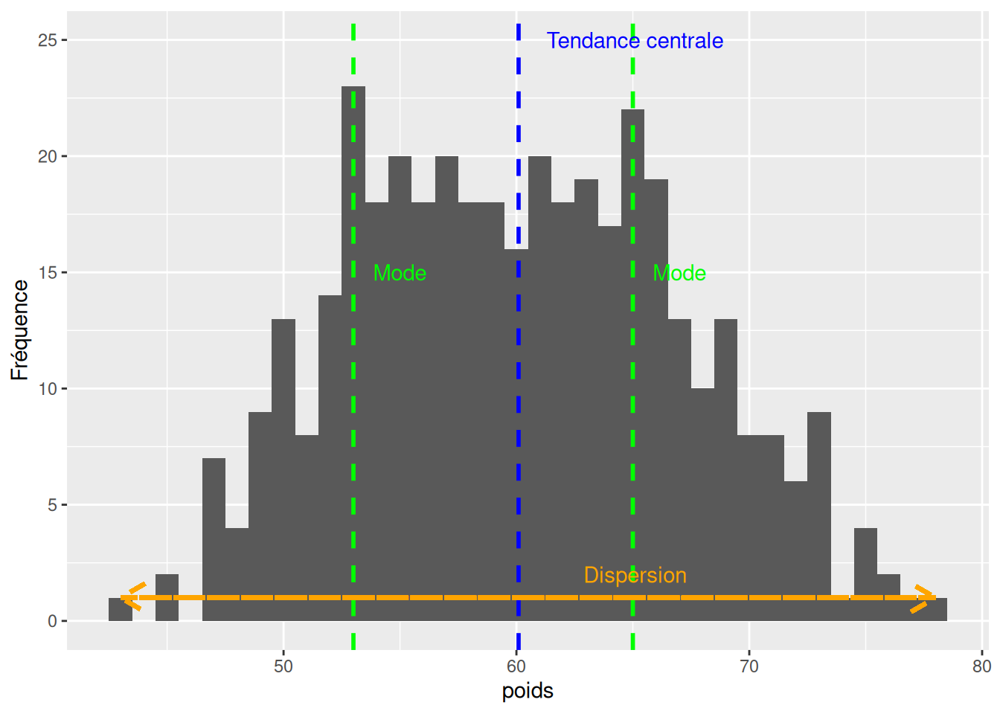
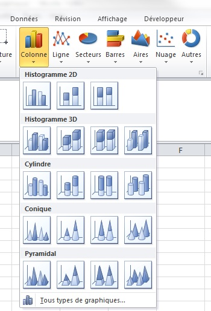
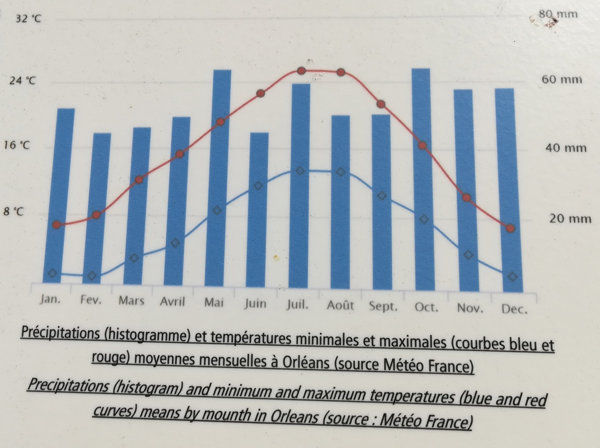
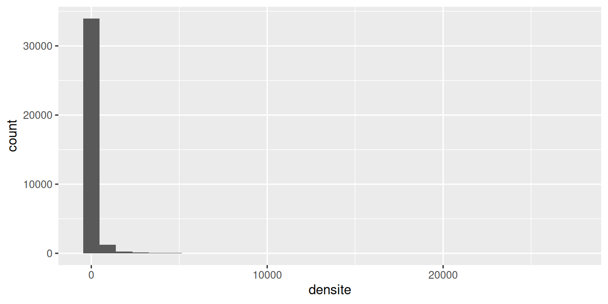
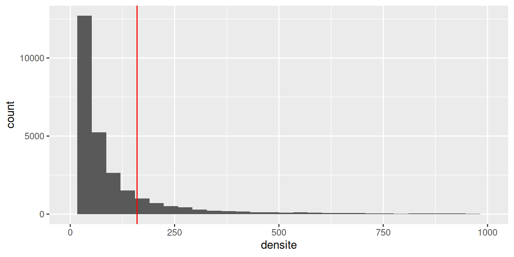
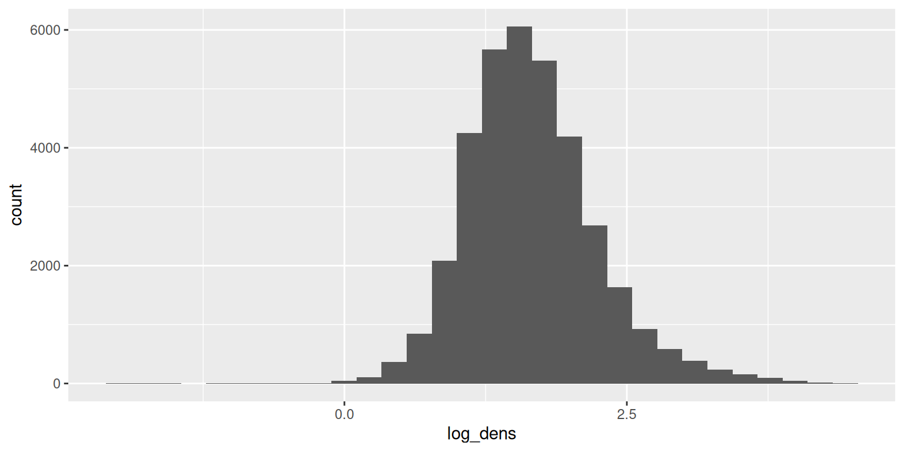
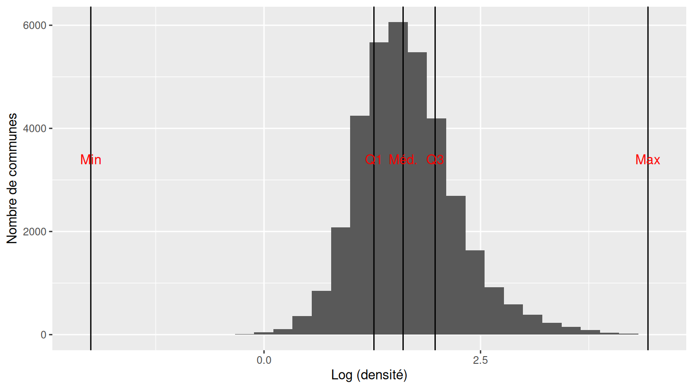
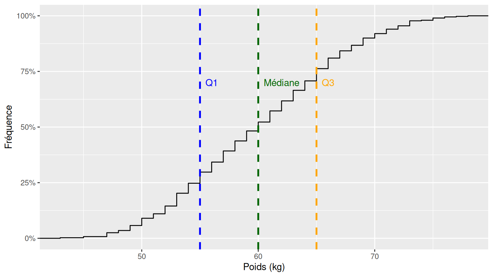
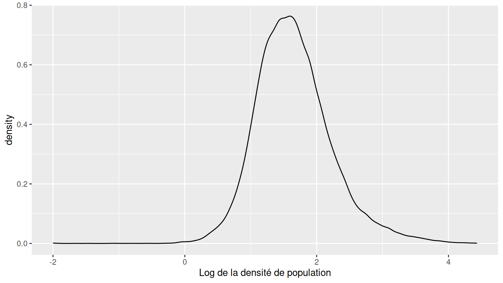

Chapitre 4 Une variable quantitative
Il existe plusieurs caractéristiques à étudier sur la distribution d’une variable quantitative :
La tendance centrale : le point autour duquel se regroupent les différentes valeurs d’une variable (mesurée par la médiane, le mode, la moyenne, etc…)
La dispersion : l’étendue des différentes valeurs (donc l’hétérogénité de la population) que peut prendre une variable (mesurée par l’écart-type, la variance, l’écart interquantiles, etc…)
L’éventuelle présence de plusieurs modes

4.1 Statistiques de distribution
4.1.1 Statistiques robustes aux valeurs extrêmes
Ce sont des statistiques qui sont peu influencées par les valeurs extrêmes de la distribution. Elles sont dites “non paramétriques” car elles ne supposent aucune distribution particulière de la variable.
- La médiane est une statistique de tendance centrale : aprés classement par ordre croissant des \(n\) valeurs, c’est la valeur de l’observation “du milieu”. Il y a autant d’observations inférieures à la médiane que d’observations supérieures. Avec R, la fonction
median()permet d’obtenir la médiane d’une variable quantitative. Si le nombre de valeurs \(n\) est impair (\(n=2k+1\)), c’est la valeur exacte observée au rang \(k+1\). Si le nombre de valeurs est pair(\(n=2k\)), c’est la moyenne entre les valeurs observées aux rangs \(k\) et \(k+1\). En cas de valeurs manquantes sur la variable, l’argument na.rm permet de ne prendre en compte que les valeurs effectives.
## [1] NA## [1] 10.81Les quartiles : après classement par ordre croissant, on partage en 4, il y a donc 3 bornes. Le premier quartile est la valeur qui sépare les observations telle que 25% soient en dessous et 75% au dessus. Le deuxième quartile est la médiane. Le troisième quartile divise enfin les 75% observations les plus basses des 25% plus élevées.
On peut généraliser aux déciles, aux centiles ou tout autre pourcentile. La fonction
quantile()permet d’obtenir les percentile de son choix (par défaut, la fonction retourne les quartiles).
## 0% 25% 50% 75% 100%
## 0.04 6.44 10.81 18.58 18360.00## 5% 10% 25% 50% 75% 90% 95%
## 3.170 4.140 6.440 10.810 18.580 30.743 41.240- L’intervalle interquartile (Interquartile range en anglais) est une statistique de dispersion. C’est l’intervalle entre le 1er et le 3ème quartile : il encadre 50% des observations. Il se calcule facilement par Q3 - Q1, ou au moyen de la fonction
IQR().
## 0% 25% 50% 75% 100%
## 0.04 6.44 10.81 18.58 18360.00## 75%
## 12.14## [1] 12.144.1.2 Statistiques sensibles aux valeurs extrêmes
Ce sont des statistiques qui sont influencées par les valeurs extrêmes de la distribution.
- Quand le terme de moyenne est employé sans plus de précision, il désigne la moyenne arithmétique. C’est une statistique de tendance centrale : \(\bar{x} = \dfrac{1}{n} \sum_{i=1}^n x_i\)
C’est la valeur qu’aurait chacune des observations si la répartition était égale entre les individus statistiques. La fonction mean() permet d’obtenir la moyenne.
## [1] 17.64062Quand la variable est discrète, la moyenne arithmétique peut être pondérée en utilisant la fonction weighted.mean().
Exemple : quel est le nombre moyen de pièces par appartement dans une localité ?
immo <- data.frame (nb_pieces = 1:7,
nb_apparts = c(38, 61, 92, 67, 43, 18, 5))
datatable (immo, width = 400,
colnames = c("Nombre de pièces", "Nombre d'appartements"),
rownames = FALSE)## [1] 3.277778- La moyenne géométrique est aussi une statistique de tendance centrale : \(\bar{x} = \sqrt[n] \prod_{i=1}^n x_i\)
soit + 5,1% par an.
Cas où l’on a juste la valeur de départ, la valeur finale et le nombre de pas de temps :
Vd <- 100
Vf <- 100 * 1.12 * 1.04 * 1.07 * 0.98
Annees <- 4
taux_moyen_annuel <- (Vf / Vd) ^ (1 / Annees)
100 * taux_moyen_annuel ^ Annees # vérification## [1] 122.1409On peut calculer la moyenne géométrique ainsi :
## [1] 11.06955- La variance est une statistique de dispersion : \(S_x^2=\dfrac{1}{n-1}\sum_{i=1}^n (x_i-\bar{x})^2\)
C’est la moyenne des carrés des écarts à la moyenne. Son unité est le carré de celle de la variable sur laquelle on la calcule. La fonction var() permet de la calculer.
## [1] 21166.58- L’écart type est une statistique de dispersion. Il est défini par : \(\sigma_x= \sqrt{S_x^2}\).
C’est l’écart moyen à la moyenne. L’écart-type (standard deviation en anglais) est dans la même unité que la variable à laquelle on l’applique. L’écart-type s’obtient avec la fonction
sd()
## [1] 145.4874- L’étendue est l’écart entre les valeurs maximale et minimale.
## [1] 0 381934- Le coefficient de variation est une statistique de dispersion relative. C’est une mesure de l’écart relatif des valeurs d’une distribution à une valeur centrale. Il permet de comparer l’hétérogénéïté de distributions de variables qui ne seraient pas du même ordre de grandeur (une variable prenant ses valeurs entre 1000 et 2000 aura naturellement une “dispersion brute” plus importante qu’une variable prenant ses valeurs entre 10 et 20). Le coefficient de variation est obtenu comme ratio de l’écart-type sur la moyenne donc, comme ces deux valeurs, il est sensible aux valeurs extrêmes. Le coefficient de variation n’a pas d’unité donc il est souvent exprimé en pourcentage.
## [1] 8.132898La fonction summary() fournit plusieurs statistiques (appliquée à une variable quantitative, on obtient : minimum, maximum, quartile, moyenne et nombre de valeurs manquantes) :
## P14_POP SUPERF
## Min. : 0 Min. : 0.04
## 1st Qu.: 197 1st Qu.: 6.44
## Median : 444 Median : 10.81
## Mean : 1837 Mean : 17.64
## 3rd Qu.: 1110 3rd Qu.: 18.58
## Max. :2220445 Max. :18360.00
## NAs :821 NAs :8214.2 Calcul sur plusieurs variables
Il est souvent pratique d’appliquer une même fonction à plusieurs variables d’un dataframe.
Sur les variables quantitatives :
dat %>%
summarise_if (is.numeric, funs(mean(., na.rm = TRUE))) %>%
round (digits = 2) %>%
t() %>%
datatable (rownames = TRUE, colnames = c('Variable', 'Moyenne'), width = 300)## Warning: `funs()` was deprecated in dplyr 0.8.0.
## ℹ Please use a list of either functions or lambdas:
##
## # Simple named list: list(mean = mean, median = median)
##
## # Auto named with `tibble::lst()`: tibble::lst(mean, median)
##
## # Using lambdas list(~ mean(., trim = .2), ~ median(., na.rm = TRUE))
## Call `lifecycle::last_lifecycle_warnings()` to see where this warning was
## generated.Sur des variables appelées par leur nom :
## Warning: `funs()` was deprecated in dplyr 0.8.0.
## ℹ Please use a list of either functions or lambdas:
##
## # Simple named list: list(mean = mean, median = median)
##
## # Auto named with `tibble::lst()`: tibble::lst(mean, median)
##
## # Using lambdas list(~ mean(., trim = .2), ~ median(., na.rm = TRUE))
## Call `lifecycle::last_lifecycle_warnings()` to see where this warning was
## generated.## P14_POP SUPERF
## 1 1837.492 17.64062On peut également décliner selon les modalités d’une variable qualitative :
dat %>%
group_by (REG) %>%
summarise_at (vars(P14_POP, SUPERF), funs(mean(., na.rm = TRUE))) %>%
mutate_if (is.numeric, round, digits = 2) %>%
datatable (width = 500)## Warning: `funs()` was deprecated in dplyr 0.8.0.
## ℹ Please use a list of either functions or lambdas:
##
## # Simple named list: list(mean = mean, median = median)
##
## # Auto named with `tibble::lst()`: tibble::lst(mean, median)
##
## # Using lambdas list(~ mean(., trim = .2), ~ median(., na.rm = TRUE))
## Call `lifecycle::last_lifecycle_warnings()` to see where this warning was
## generated.4.3 Représentations graphiques
Plusieurs représentations permettent de visualiser la distribution des valeurs d’une variable quantitative. Les principales sont :
- l’histogramme
- le diagramme de densité
4.3.1 Histogramme
C’est la représentation la plus classique, qui permet d’observer la fréquence d’observations dans différents intervalles de valeurs.
A ne pas confondre avec le diagramme en barres / bâtons !
Beaucoup de confusions entre ces deux types de graphiques, même dans des journaux “de référence” comme dans cet article de la rubrique “Les décodeurs” du Monde et dans Excel.

… ou dans l’arboretum des Barres, là où ont été formés la plupart des ingénieurs forestiers des ministères de l’agriculture et de l’environnement.

Ça c’est un diagramme en bâtons, contrairement à ce qu’indique la légende.
Un histogramme, c’est ça !
dat <- mutate (dat, densite = P14_POP/SUPERF,
densite = replace (densite, densite == 0, 0.01))
# pour éviter les densités nulles (si on souhaite faire un passage au log, voir plus bas)
g <- ggplot (data = dat, aes (densite)) + geom_histogram ()
g
Il n’y a qu’une variable considérée. L’axe des abscisses est numérique et couvre la gamme des valeurs prises par la variable considérée. L’axe des ordonnées indique le nombre des valeurs (ou leur fréquence en pourcentage) dans chaque intervalle. L’histogramme est obtenu grâce à la fonction geom_histogram(), appliquée à la suite de la fonction ggplot() (qui, elle, permet de définir les variables qui seront prises en compte pour le graphique ; cf. le module 5 qui devrait être proposé à partir de 2019).
Les quelques valeurs très élevées rendent le graphique illisible. On limite la gamme des valeurs de l’axe des abscisses.
g + scale_x_continuous (limits = c (0, 1000)) +
geom_vline (xintercept = mean (dat$densite, na.rm = T), color = 'red')
Ici, peu de villes ont une densité importante, et la plupart sont concentrées sur la première barre : c’est un phénomène d’asymétrie (skewness en anglais).
La fonction geom_vline() permet d’ajouter une ligne verticale, afin de mettre en évidence des valeurs particulières (ex : moyenne, seuil réglementaire). Ici, la moyenne (ligne verticale rouge) est un mauvais indicateur de tendance centrale.
Si l’on est chagriné par cette distribution, on peut appliquer à la variable une transformation logarithmique. Le logarithme “tasse” les valeurs élevées et “étire” les valeurs faibles, cela permet de zoomer là où il y a de la donnée.
dat <- mutate (dat, log_dens = log10 (densite))
summarise (dat, mini = min (densite, na.rm = T), maxi = max (densite, na.rm = T))## mini maxi
## 1 0.01 27126.14## mini maxi
## 1 -2 4.433388Voyons à quoi ressemble l’histogramme de la variable transformée.

C’est déjà bien plus lisible … mais quelques finitions peuvent le rendre plus informatif et “auto-porteur”.
quan <- pull (dat, log_dens) %>% quantile (na.rm = T)
ggplot (data = dat, aes (x = log_dens)) + geom_histogram () +
geom_vline (xintercept = quan) +
annotate (geom = "text", x = quan,
y = 3400, label = c ("Min", "Q1", "Méd.", "Q3", "Max"), colour = "red") +
xlab (label = "Log (densité)") +
ylab (label = "Nombre de communes")
L’histogramme est plus lisible et informatif ! La fonction annotate() permet d’ajouter du texte, et enfin xlab() et ylab() servent à modifier le nom des axes.
4.3.2 La fonction de répartition (cumulative)
quan <- pull(poids_sex, poids) %>% quantile()
ggplot (data = poids_sex, aes (x = poids)) + stat_ecdf () +
xlab (label = "Poids (kg)") +
ylab (label = "Fréquence") +
scale_y_continuous (labels = scales::percent) +
geom_vline(aes(xintercept = quan[2]), color = "blue", linetype = "dashed", size = 1) +
geom_vline(aes(xintercept = quan[3]), color = "darkgreen", linetype = "dashed", size = 1) +
geom_vline(aes(xintercept = quan[4]), color = "orange", linetype = "dashed", size = 1) +
annotate (geom = "text", x = c (quan[2]+1, quan[3]+2, quan[4]+1),
y = 0.7, label = c ("Q1", "Médiane", "Q3"), colour = c("blue", "darkgreen", "orange"))
4.3.3 Graphique de densité
La densité d’une variable correspond à la probabilité de réalisation de chacune des valeurs possibles de cette variable : il s’agit d’une fonction continue (nombre infini de points). Exemple pour \(X \hookrightarrow \mathcal{N}(m,\sigma)\) : \(f_X(t) = \dfrac{1}{\sigma \sqrt{2\pi}}exp(-\dfrac{(t-m)^2}{2\sigma^2})\)
Comme on n’observe qu’un nombre fini de points, on recourt à l’estimation par “noyau” pour estimer la densité en chaque point “possible” de la variable.
La valeur de la densité en \(t\) se calcule comme une moyenne pondérée de l’ensemble des points observés. Plus la valeur est éloignée de \(t\), moins leur poids est important. Le poids est donné par une fonction appelée noyau. Par exemple, le noyau gaussien : \(K(u)=\dfrac{1}{\sqrt{2\pi}}exp(-\dfrac{u^2}{2})\)
Grâce au package ggplot2, il est possible de créer un graphique de densité avec la fonction geom_density()

4.4 Discrétisation d’une variable continue
La discrétisation est l’opération qui permet de découper une série de données quantitatives en classes : elle est très utilisée pour les représentations cartographiques. La création des classes dépend fortement de la forme de la distribution. Plusieurs méthodes existent, par exemple :
- Seuils naturels (Jenks, coûteuse en calcul)
- Moyenne et écart type
- Progression géométrique (adaptée aux distributions asymétriques)
- Méthode des quantiles (souvent par défaut)
4.4.1 Méthode des quantiles
Cette méthode vise une répartition égale des effectifs, c’est à dire le même nombre de données observations par classe. La fonction cut() permet de créer une variable selon le découpage voulu. Elle posséde les options breaks et labels. breaks permet d’indiquer le découpage voulu grâce à un vecteur (les éléments dont la valeur est comprise entre le 1er et le 2éme élément de ce vecteur rentre dans la première classe, entre le 2éme et 3éme élément, dans la 2éme classe, etc….). Pour faire un découpage en x classes, le vecteur de breaks prend donc x + 1 éléments. labels permet d’indiquer les noms de classes grâce à un vecteur qui comporte autant d’élément que de classes à créer.
## 0% 25% 50% 75% 100%
## 0.01000 18.59047 40.35457 94.57430 27126.141084.4.2 Méthode des seuils naturels (méthode de Jenks)
Cette méthode revient à séparer les classes à partir des fortes discontinuités observées dans la distribution. La fonction getBreaks() permet d’obtenir les bornes des classes, selon la méthode voulue.
## Warning in classInt::classIntervals(v, nclass, style = method, ...): N is
## large, and some styles will run very slowly; sampling imposed## tr_dens2
## (0,1.34e+04] (1.34e+04,6.88e+04] (6.88e+04,1.17e+06] (1.17e+06,2.22e+06]
## 35845 23 0 0